Program Operator
Program Coordinator guide
Work through the case worklist — open a case, check the patient's identity and documents, approve it, send it back or reject it, and then look after the approved patient dose by dose.
For Program Coordinators who validate Patient Support Programme cases in the Program Operator portal.
Click the screenshot to enlarge it.
Before you start
The Program Operator portal is a web page for your computer. As a Program Coordinator you see the case work only: the worklist, the cases, enrolments, nurse visits, near expirations and your notifications. Programmes, products, networks, place allocations and portal users are set up by your Operator Admin — see the Operator admin guide.
- Your sign-in. Your Operator Admin creates your account: a phone number and a password. It is yours alone — every decision you take is recorded under your name.
- Which cases you see. The cases of the programmes you are assigned to.
- One rule to remember. Opening a case locks it to you, and a release timer frees it again. Nothing is saved until you press a decision button, so anything you leave half-done is lost when you leave the case or the timer runs out.
Sign in
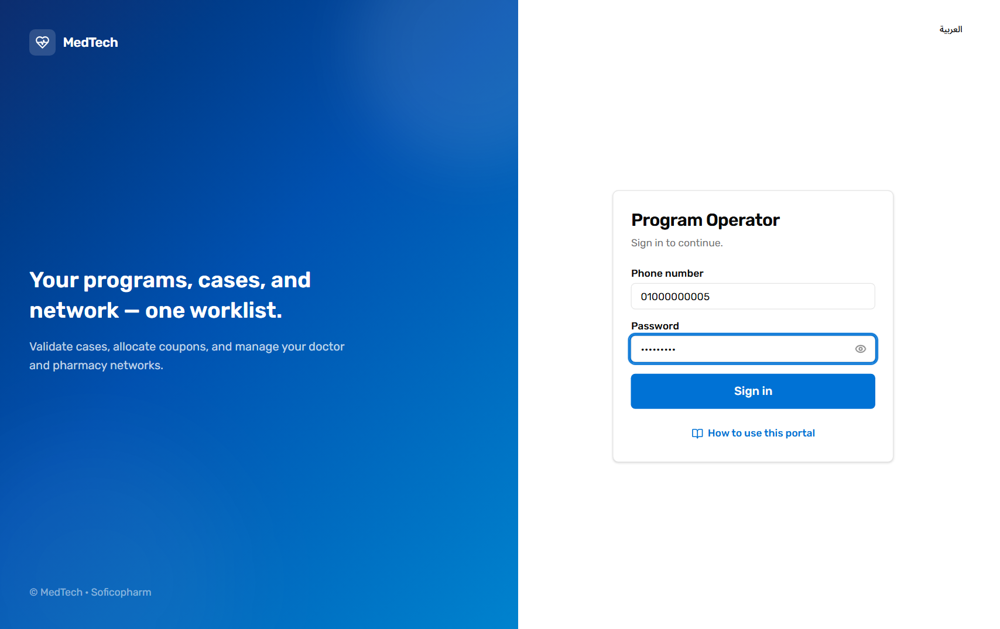
- 1Phone number — the phone number of your account.
- 2Password — your password.
- 3Click the eye to show the password while you type it.
- 4Sign in opens your case worklist.
- 5Switch the screen between English and العربية at any time.
- 6How to use this portal opens the user guides in a new tab.
Find your way around
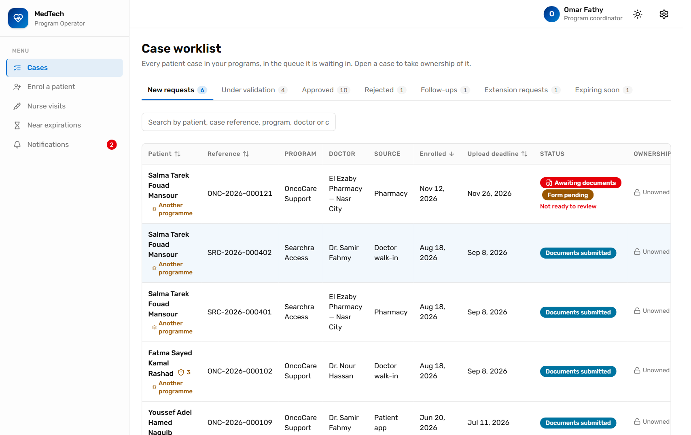
- 1Cases — the case worklist, your home screen.
- 2Enrol a patient — shown only if you are allowed to enrol patients yourself.
- 3Nurse visits — the home-nurse visits of your cases.
- 4Near expirations — patients to call about boxes close to their expiry date.
- 5Notifications — the red dot counts the unread ones.
- 6The sun switches between a light and a dark screen.
- 7Settings — choose the Language, open this User guide, or Sign out. Always sign out when you leave a shared computer.
The case worklist
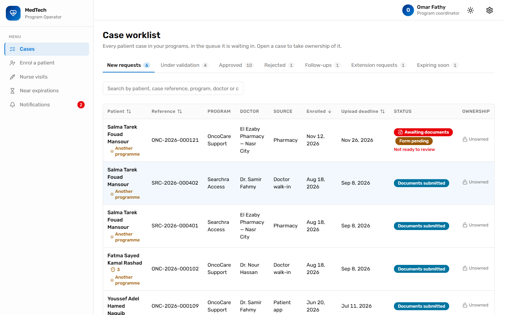
- 1The queues. The number on each tab is how many cases wait there.
- 2Search by patient, case reference, programme, doctor or coupon.
- 3Click a patient's name, or anywhere on the row, to open the case.
- 4Click a column title with arrows to sort by it. The newest enrolments come first.
- 5Status — where the case stands (see the table below).
- 6Ownership — who is working on the case right now.
- 7With the keyboard, ↑ ↓ move between cases and Enter opens one.
| Tab | What waits there |
|---|---|
| New requests | Cases whose documents have just arrived, and new cases whose enrolment form still has to be completed. |
| Under validation | Cases being checked, cases sent back to the patient for a correction, and resubmitted cases. |
| Approved | Approved cases. They stay here while their doses are being collected. |
| Rejected | Rejected cases. Rejection is final. |
| Follow-ups | Follow-up results sent by the doctor that wait for your review. |
| Extension requests | Patients who asked for more time to upload their documents. |
| Expiring soon | Approved coupons that expire tomorrow. On this tab the date column shows Coupon expires. |
Your browser's Back button brings you from a case to the same tab and page. Sorting orders the cases on the page you are looking at.
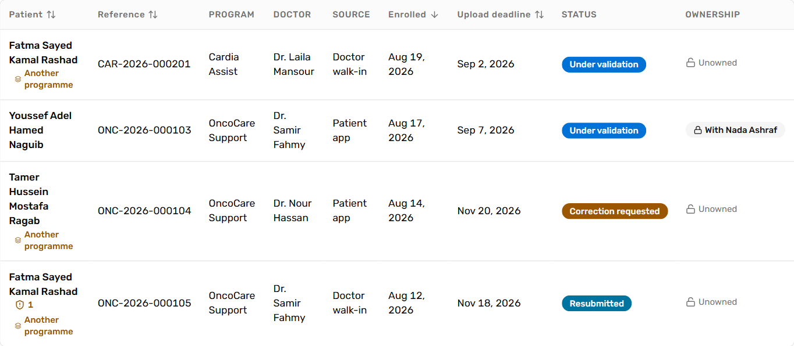
- 1With … — another coordinator has this case open. You can read it but not act on it.
- 2Unowned — nobody has it; open it to take it. Your own cases show Yours.
- 3Correction requested — sent back to the patient; waiting for them.
- 4Resubmitted — the patient sent the corrected documents; it is ready for you again.
- 5Another programme — the patient also has a live case on another programme of your office.
- 6The shield and number count the open abuse signals on the case.
Case statuses
| Status | What it means |
|---|---|
| Awaiting documents | Enrolled; the patient has not sent the documents yet. |
| Documents submitted | The documents arrived. The case waits in New requests. |
| Under validation | A coordinator is checking it. Opening a submitted case moves it here. |
| Correction requested | Sent back to the patient with a note; waiting for them. |
| Resubmitted | The patient sent the corrections; it waits for you in Under validation. |
| Approved | The coupon is active and the doses can be delivered. |
| Rejected | Final. The patient can only come back through a new enrolment. |
| Cancelled | The coupon was cancelled after approval. |
| Closed — window expired | The upload deadline passed before the case was validated. |
Open and check a case
1. Read the case before you open it
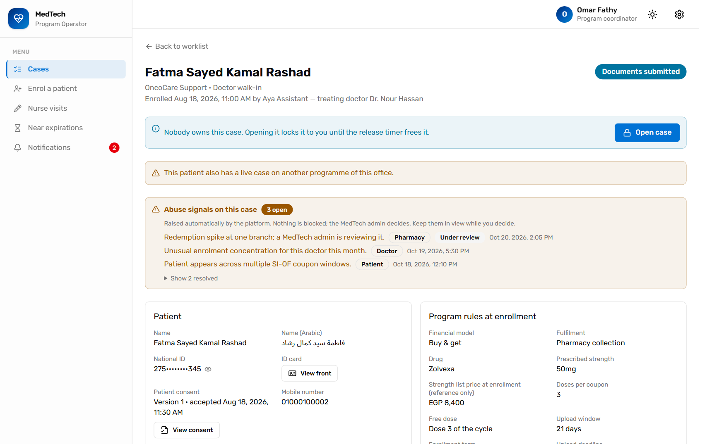
- 1The patient's name, the programme and how the patient was enrolled — when, by whom and under which doctor.
- 2The case status.
- 3Nobody owns this case. You can read everything, but you cannot act yet.
- 4Open case locks the case to you.
- 5This warning appears when the patient also has a live case on another programme of your office.
- 6Abuse signals on this case — raised by the platform; see step 7.
- 7Back to worklist returns to the case worklist.
2. Open the case — it locks to you
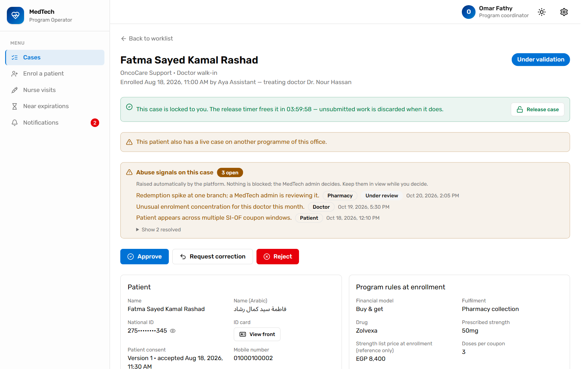
- 1This case is locked to you. The countdown shows when the release timer frees it.
- 2Release case hands the case back to the queue straight away, if you stop working on it.
- 3Opening a submitted case moves it to Under validation.
- 4Approve…
- 5…Request correction…
- 6…and Reject appear only while the case is locked to you.
Your Operator Admin sets the length of the release timer for each programme.
3. Check the patient and the programme rules
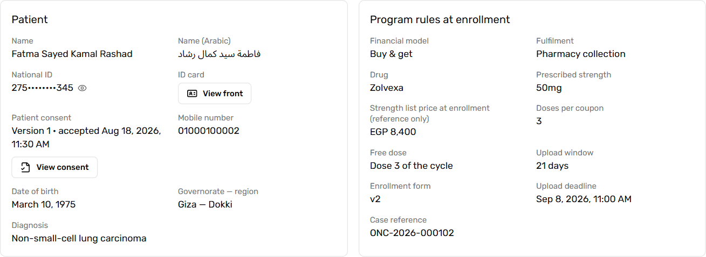
- 1National ID — partly hidden. Click the eye to show the full number when you need it.
- 2ID card — View front and View back open the photos of the patient's ID card.
- 3Patient consent — the version the patient accepted and when; View consent opens it.
- 4Program rules at enrollment — the rules this case runs under, frozen on the day of enrolment. Later changes to the programme do not change them.
- 5Strength list price at enrollment (reference only) — for reference; Not recorded at enrollment when no price was recorded.
- 6Upload deadline — the last day for the patient's documents.
You also see the mobile number, date of birth, governorate and region, and the diagnosis.
4. Look at the ID card
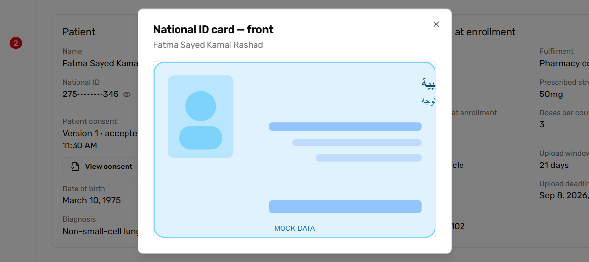
- 1National ID card — front (or back), with the patient's name.
- 2Compare the photo with the patient's name and national ID.
- 3Close it with × or the Esc key.
If the patient has not uploaded the card, the case says No card images on file.
5. Check the consent
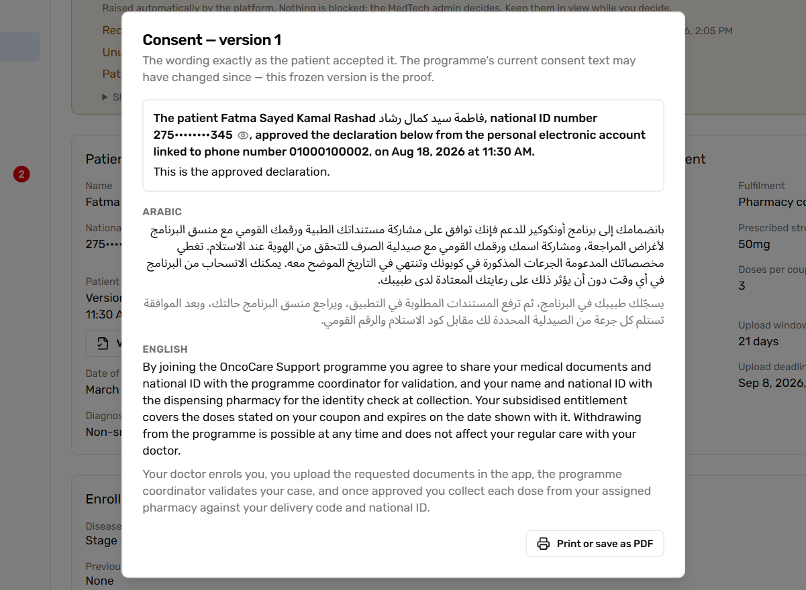
- 1Consent — version … — the wording frozen at the moment the patient accepted it.
- 2Who accepted it — with the national ID partly hidden (the eye shows it), the phone number, the date and the time.
- 3The consent text in Arabic…
- 4…and in English.
- 5Print or save as PDF prints the record. The printed copy always keeps the national ID partly hidden.
6. Read the answers and the documents
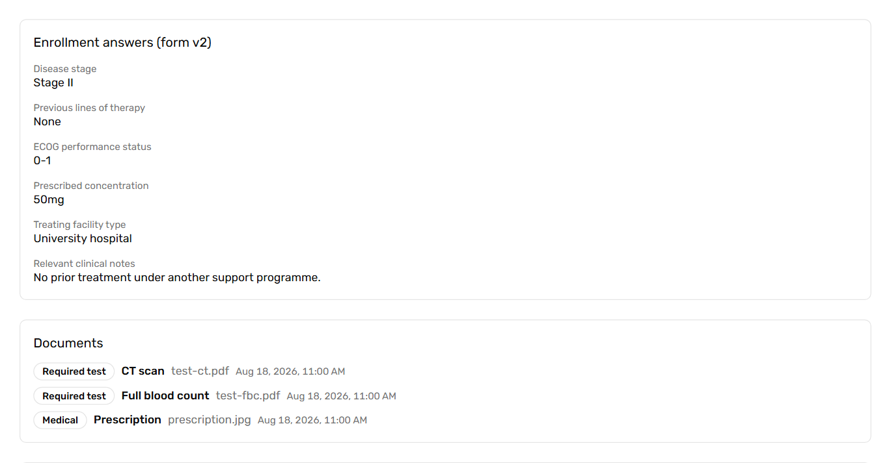
- 1Enrollment answers — the doctor's answers, on the version of the form the case was enrolled with.
- 2Documents — everything the patient uploaded.
- 3Required test — a test the programme asked for.
- 4Medical (or Financial) — the kind of document.
- 5Click a file name to preview it on this page; Open in new tab is inside the preview. Each file shows when it was uploaded.
7. Keep abuse signals in view
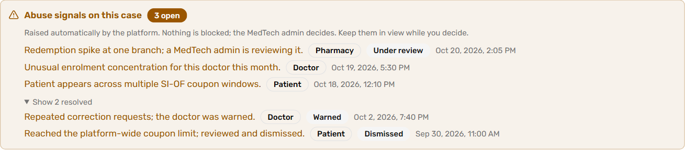
- 1Abuse signals on this case, and how many are open.
- 2The platform raises them on its own. Nothing is blocked — the MedTech admin decides what to do.
- 3Each signal: what was noticed, who it is about (Patient, Doctor or Pharmacy) and when. Under review means a MedTech admin is already looking at it.
- 4Show … resolved opens the signals that are already closed, with the action taken.
You cannot change a signal. Keep it in mind when you take your decision.
8. Add a note to the case history
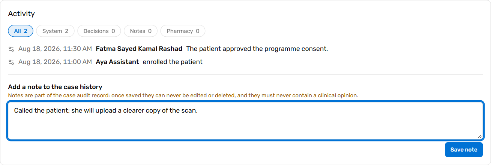
- 1Filter the history: All, System, Decisions, Notes or Pharmacy. Each shows how many entries it holds.
- 2Each entry shows the time, who did it and what happened, newest first.
- 3Notes are part of the audit record: they can never be edited or deleted, and they must never contain a clinical opinion.
- 4Type your note — for example, the outcome of a phone call.
- 5Save note. Notes need the case lock, like every decision.
A case another coordinator holds
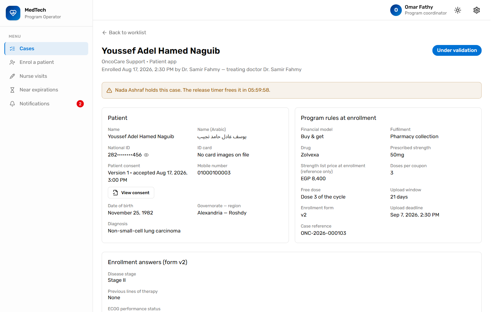
- 1You can read the whole case.
- 2The panel names the coordinator who holds it and says when the release timer frees it. Until then there is no Open case button.
Rejected, cancelled and closed cases show no Open case button either: there is nothing left to decide.
Decide on a case
Every decision needs the case lock. Each one opens a window where you confirm it; Cancel closes the window without deciding.
Approve
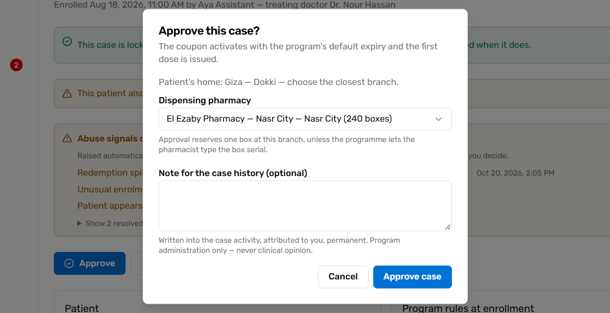
- 1Approve this case? The coupon activates with the programme's default expiry, and the first dose is issued.
- 2The patient's home governorate and region — choose the closest branch.
- 3Dispensing pharmacy — every branch of the programme, with the number of boxes it holds. For a patient a pharmacy enrolled, that branch is already chosen; you can change it.
- 4Approval reserves one box at that branch, unless the programme lets the pharmacist type the box serial.
- 5Note for the case history (optional) — written into the history under your name, for good.
- 6Approve case confirms. You return to the worklist and the case moves to Approved.
If no branch is attached to the programme, or the chosen branch has no box, the window says so before you confirm. On a home-nurse programme there is no pharmacy to choose. Some programmes also let you approve and choose the pharmacy later — see Programmes with advanced pharmacy search.
Approve with a co-payment tier
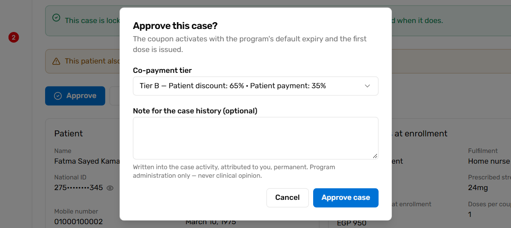
- 1Co-payment tier — pick the tier you assessed. Each shows the patient's discount and what the patient pays.
- 2Note for the case history (optional).
- 3Approve case.
Send back for a correction
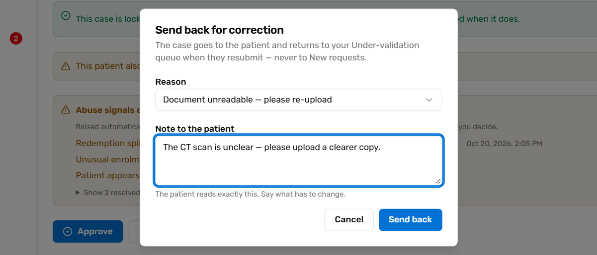
- 1The case goes to the patient and comes back to Under validation when they resubmit — never to New requests.
- 2Reason — pick one from the programme's list.
- 3Note to the patient — required.
- 4The patient reads exactly this note. Say what has to change.
- 5Send back confirms. The status becomes Correction requested.
Reject
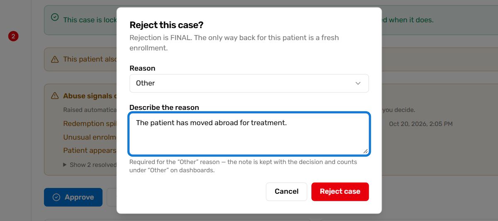
- 1Rejection is FINAL. The only way back for this patient is a new enrolment.
- 2Reason — pick one from the programme's list.
- 3If you pick Other, Describe the reason appears and is required.
- 4Reject case confirms. You return to the worklist and the case moves to Rejected.
A resubmitted case, and requests for more time
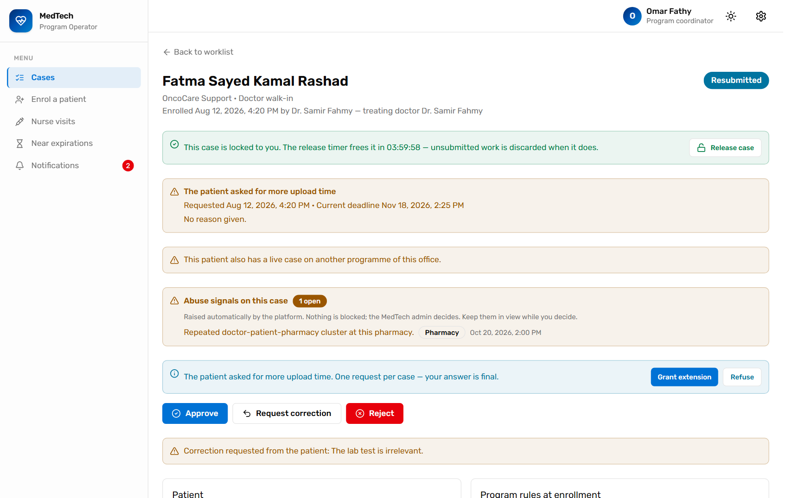
- 1Resubmitted — the patient sent the corrected documents.
- 2The patient asked for more upload time — when they asked, the current deadline and their reason.
- 3One request per case — your answer is final.
- 4Grant extension moves the upload deadline; Refuse keeps it. Both ask you to confirm.
- 5Decide on the case itself as usual: Approve, Request correction or Reject.
- 6The correction you asked for last time.
The request shows even before you open the case, so you know what you are opening it for. Patients who asked for more time also wait in the Extension requests tab.
Programmes with advanced pharmacy search
On some programmes you can ask pharmacies whether they hold the medicine before you assign one. On these programmes an approved case without a pharmacy shows a Pharmacy search card. Everywhere else nothing changes: you choose the pharmacy when you approve.
Approve now, choose the pharmacy later
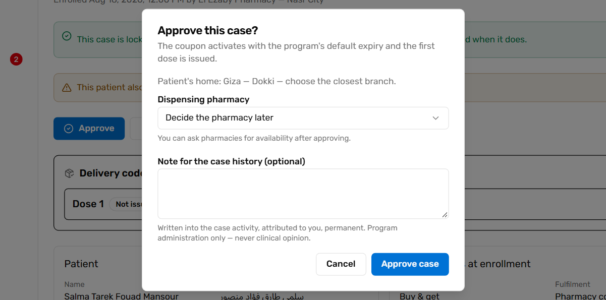
- 1Dispensing pharmacy — choose a branch as usual, or Decide the pharmacy later.
- 2You can ask pharmacies for availability after approving.
- 3Approve case. The coupon becomes active, but no dose is issued until a pharmacy is assigned.
Deciding later is optional: you can still choose a branch here. On a programme without advanced pharmacy search there is no such option, and a pharmacy is required to approve.
A case waiting for a pharmacy
Approving hands the lock back. Open the case again from the Approved tab to work on it.
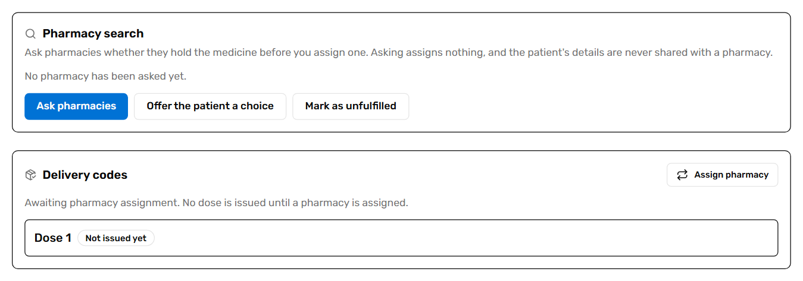
- 1Pharmacy search — asking assigns nothing, and the patient's details are never shared with a pharmacy.
- 2No pharmacy has been asked yet.
- 3Ask pharmacies sends availability requests.
- 4Offer the patient a choice — once two or more pharmacies have confirmed.
- 5Mark as unfulfilled — when no pharmacy can supply the medicine.
- 6Awaiting pharmacy assignment. No dose is issued until a pharmacy is assigned. There is no delivery code yet.
- 7Assign pharmacy assigns any pharmacy of the programme straight away, without asking first.
Asking is never required: you can assign a pharmacy at any time.
Ask pharmacies
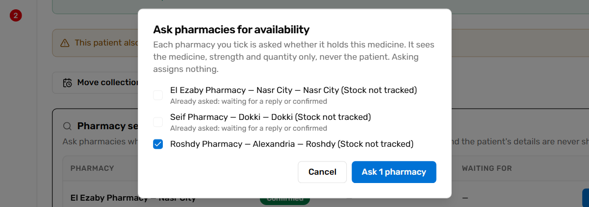
- 1Each pharmacy you tick is asked. It sees the medicine, the strength and the quantity only — never the patient.
- 2A pharmacy whose request is still waiting or confirmed cannot be asked twice; its box is greyed out.
- 3Tick the pharmacies to ask. A pharmacy that refused, or whose request you withdrew, can be asked again.
- 4Ask … pharmacies sends the requests.
If a pharmacy enrolled the patient, it is ticked for you. It still has to reply like any other.
Follow the replies
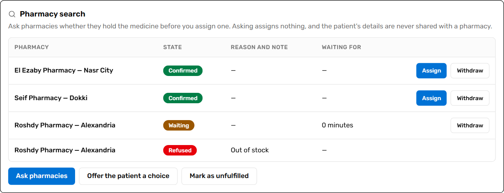
- 1Confirmed — the pharmacy says it has the medicine.
- 2Waiting — no reply yet. Waiting for shows for how long.
- 3A refused request shows the pharmacy's reason, for example Out of stock, and its note if it wrote one.
- 4Assign this pharmacy.
- 5Withdraw a waiting or confirmed request.
- 6Offer the patient a choice among the confirmed pharmacies.
| State | What it means |
|---|---|
| Waiting | Sent; the pharmacy has not replied yet. |
| Confirmed | The pharmacy holds the medicine. Nothing is reserved for this patient. |
| Refused | With a reason — Out of stock, Does not stock this medicine or Other — and sometimes a note. You can ask again. |
| Withdrawn | You withdrew the request. You can ask again. |
| Closed | A pharmacy was assigned to the case, so the request is no longer needed. |
You can send more requests at any time while the case has no pharmacy.
Offer the patient a choice
Offer the patient a choice lists the pharmacies that confirmed, all ticked. Untick any you do not want to offer, keep at least two, and press Send the offer. To use only one pharmacy, assign it directly.
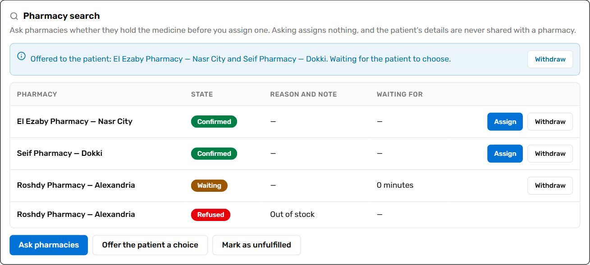
- 1Offered to the patient: … The patient chooses one of these pharmacies in the MedTech app, and the choice assigns it.
- 2Withdraw takes the offer back while the patient has not chosen.
A new offer replaces the one already open, and withdrawing a confirmed request removes that pharmacy from the offer. You can still assign a pharmacy yourself.
Assign a pharmacy
Press Assign on a confirmed row, or Assign pharmacy on the Delivery codes card to choose any pharmacy of the programme, asked or not. Assign this pharmacy? asks you to confirm: the dose code is issued, the patient is told, and every other request on the case closes.
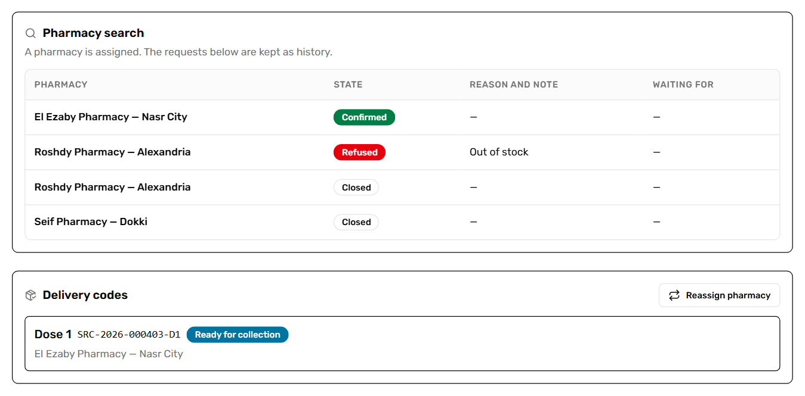
- 1A pharmacy is assigned. The requests below are kept as history.
- 2The other requests are Closed.
- 3The first dose is Ready for collection at the assigned pharmacy.
- 4Reassign pharmacy works as on any approved case.
The same happens when the patient chooses a pharmacy from your offer.
When no pharmacy can supply it
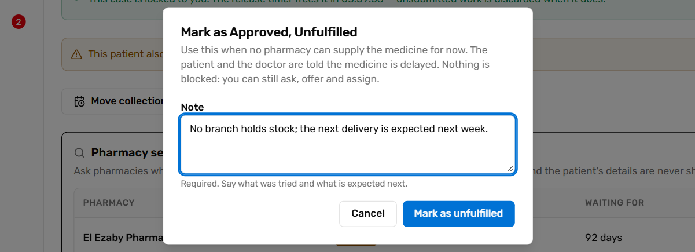
- 1Use it when no pharmacy can supply the medicine for now. The patient and the doctor are told the medicine is delayed. Nothing is blocked.
- 2Note — required. Say what was tried and what is expected next.
- 3Mark as unfulfilled.
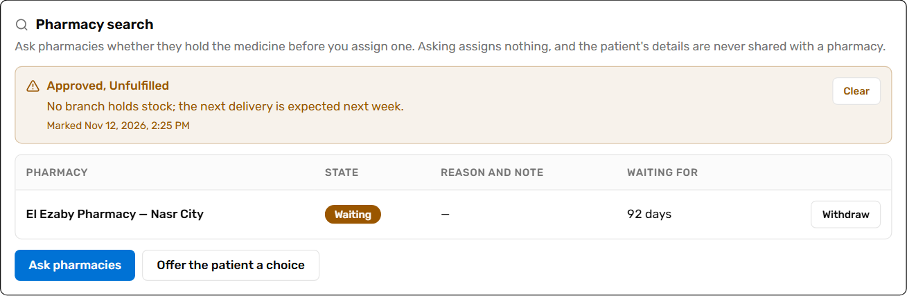
- 1Approved, Unfulfilled, with your note and when it was marked.
- 2Clear removes the mark once things move again.
- 3Requests carry on: you can still ask, offer and assign.
The mark also goes away by itself when a pharmacy is assigned.
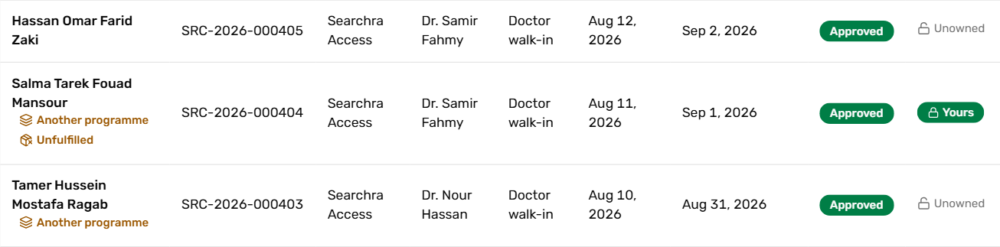
- 1Unfulfilled under the patient's name, in the Approved tab. There is no separate queue for these cases.
- 2Going back to the worklist does not release the case: it stays Yours until you release it or the timer frees it.
After approval
An approved case stays in Approved while its doses are collected. Open it to take the lock:
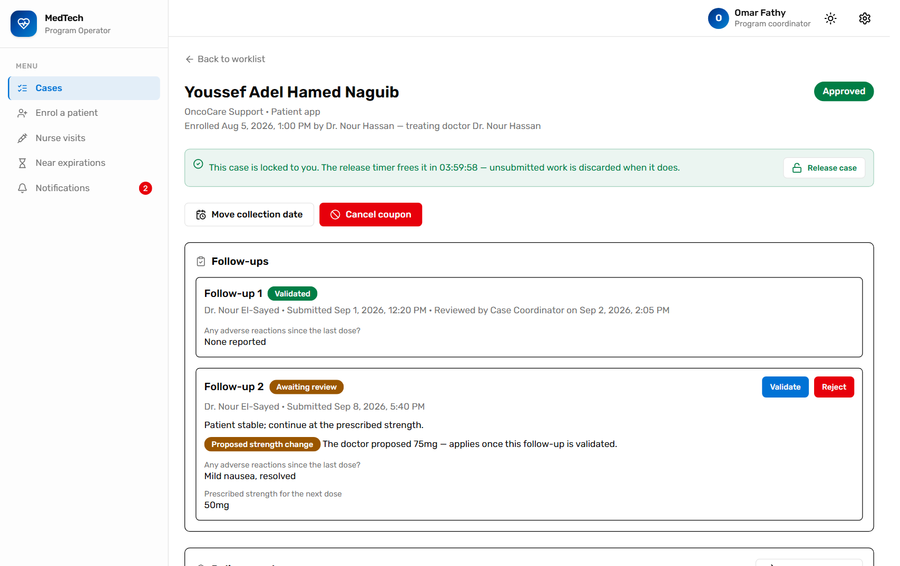
- 1Approved.
- 2Move collection date gives the patient more time to collect the current dose.
- 3Cancel coupon withdraws the patient's remaining doses.
- 4Follow-ups — the doctor's follow-up results, when the programme asks for them.
Review a follow-up
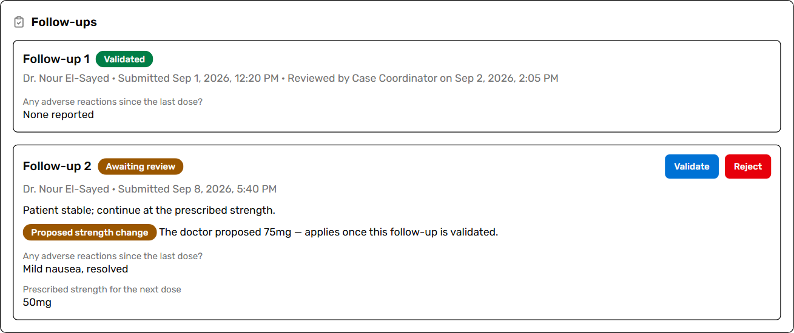
- 1Validated — a follow-up already reviewed, with who reviewed it and when.
- 2Awaiting review — a follow-up the doctor submitted.
- 3Proposed strength change — the doctor proposed a new strength; it applies once you validate this follow-up. The doctor's notes and answers are shown with it.
- 4Validate confirms the results and unlocks the next dose's delivery code.
- 5Reject sends it back: the next dose stays locked until an acceptable follow-up is submitted.
Both buttons open a confirmation with an optional note.
Delivery codes and the dispensing pharmacy
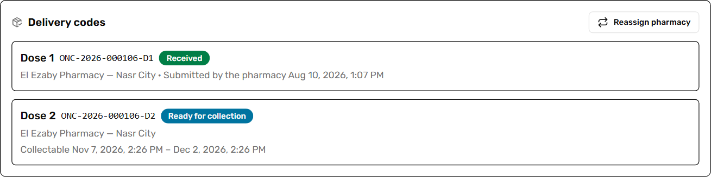
- 1Reassign pharmacy — moves the case to another branch, for example when a branch runs out of stock or closes.
- 2Received — the dose was handed over, with the branch and the time.
- 3Ready for collection — the patient can collect this dose now.
- 4Collectable — the dates this dose can be collected.
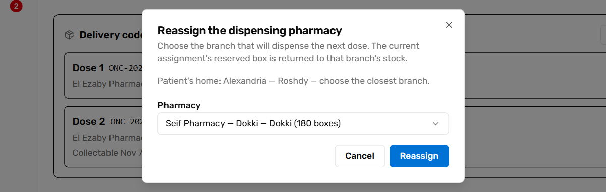
- 1The chosen branch dispenses the next dose. The box reserved at the current branch goes back to its stock.
- 2The patient's home governorate and region.
- 3Pharmacy — pick the new branch.
- 4Reassign confirms.
Reassigning needs the case lock. It is not offered on home-nurse programmes, or once every dose has been delivered.
| Dose status | What it means |
|---|---|
| Not issued yet | The code is not issued yet — for example, a follow-up must be validated first, or no pharmacy is assigned yet. |
| Ready for collection | The patient can collect it at the assigned branch. |
| At the counter | A pharmacist has the code open right now. |
| Awaiting patient confirmation | The pharmacy submitted the handover; the patient has not confirmed on their phone. |
| Received | Handed over. |
| Awaiting visit scheduling / Visit scheduled | Home-nurse doses: waiting for the patient to book, or booked. |
| Expired / Cancelled | The code can no longer be used. |
Release a code the patient never confirmed
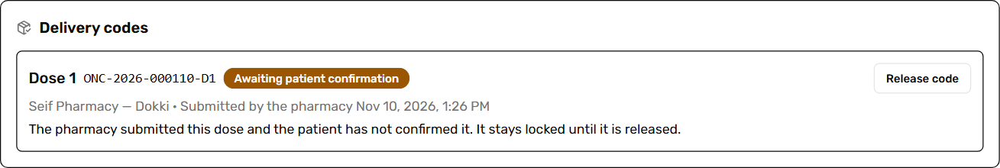
- 1Awaiting patient confirmation — the pharmacy submitted this dose, but the patient did not confirm on their phone.
- 2It stays locked until someone releases it.
- 3Release code asks for a Reason for the release (required, kept in the audit record). The dose goes back to Ready for collection so the patient can collect it again.
Releasing a code does not need the case lock.
Move the collection date
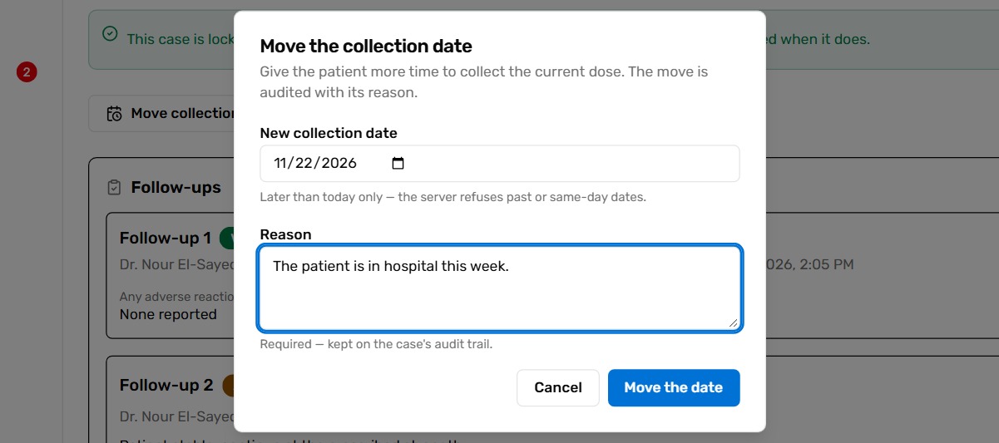
- 1The move is recorded with its reason.
- 2New collection date — later than today only.
- 3Reason — required.
- 4Move the date confirms.
Use it, for example, from the Expiring soon tab when a patient cannot reach the pharmacy before the coupon expires. Nothing is ever extended without you.
Cancel a coupon
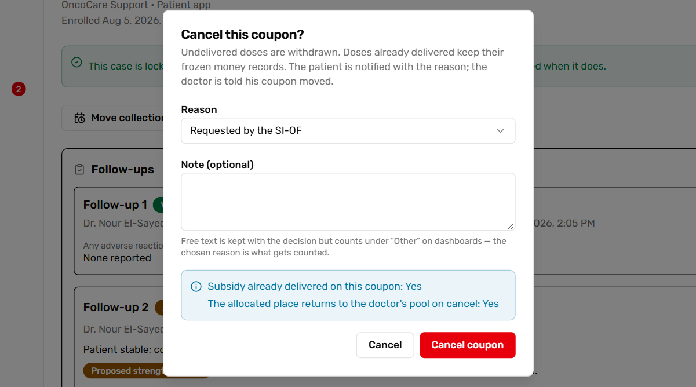
- 1Undelivered doses are withdrawn; doses already delivered keep their money records. The patient is told the reason; the doctor is told his coupon moved.
- 2Reason — required, from the programme's list.
- 3Note (optional) — required only for the reason Other.
- 4Whether a subsidy was already delivered, and whether the place returns to the doctor.
- 5Cancel coupon confirms. The case becomes Cancelled and you return to the worklist.
Complete the form of a pharmacy or coordinator enrolment
When a pharmacy or a coordinator enrols a patient, only the identity and the programme are entered. A coordinator then completes the clinical enrolment form on the case. Until then, no decision is possible.
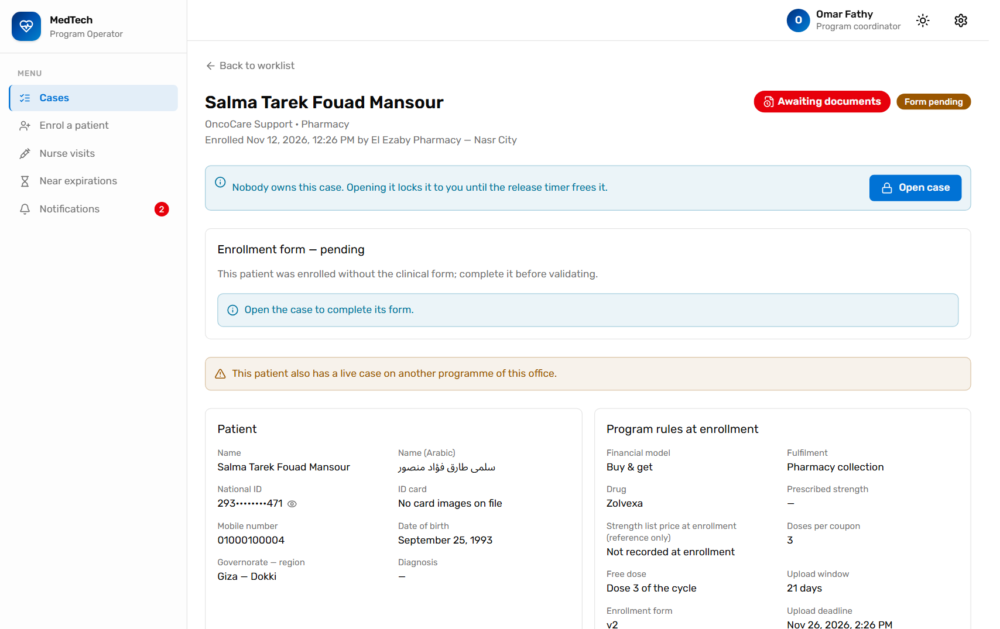
- 1The patient's name.
- 2Form pending.
- 3When and by whom the patient was enrolled — here, a pharmacy branch.
- 4Open case to take the lock.
- 5This patient was enrolled without the clinical form; complete it before validating.
- 6Open the case to complete its form.
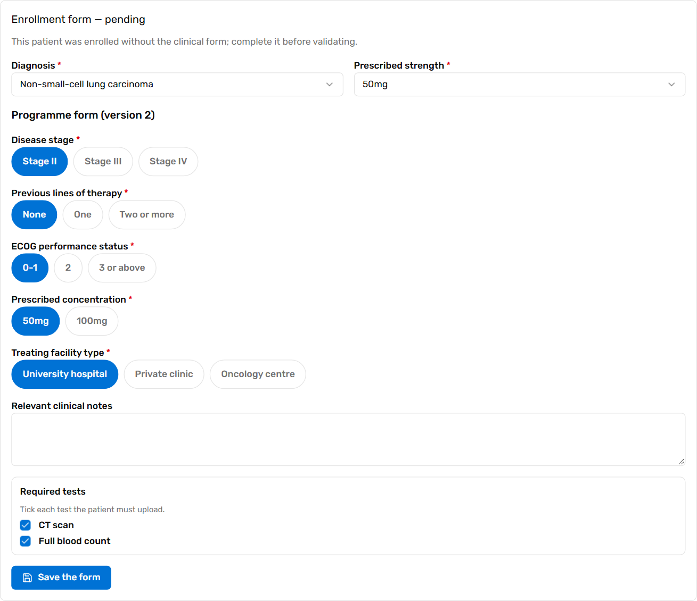
- 1Diagnosis.
- 2Prescribed strength.
- 3Answer every question of the programme form. A red star marks a required one.
- 4Tick each test the patient must upload.
- 5Save the form works once nothing is missing; the line above it counts what is left.
After saving you see Form completed — the case can now be validated. Saving also hands the lock back: open the case again when it is ready for your decision. The patient still has to upload the documents in the app.
Enrol a patient yourself
Enrol a patient appears in the menu only if your Operator Admin allows you to enrol. You confirm who the patient is and pick the programme; the patient finishes in the app, and the clinical form is completed from the case. One place is spent when you submit.
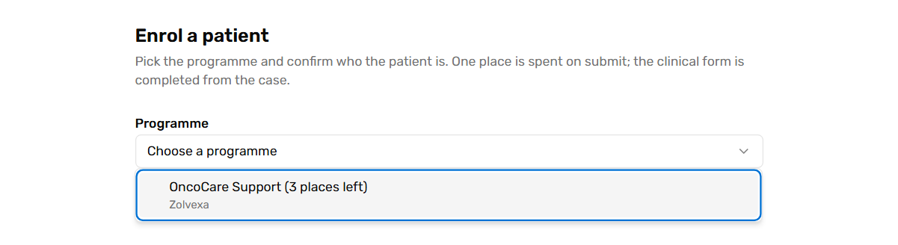
- 1Enrol a patient.
- 2Programme — open the list.
- 3Each programme shows how many places you have left.
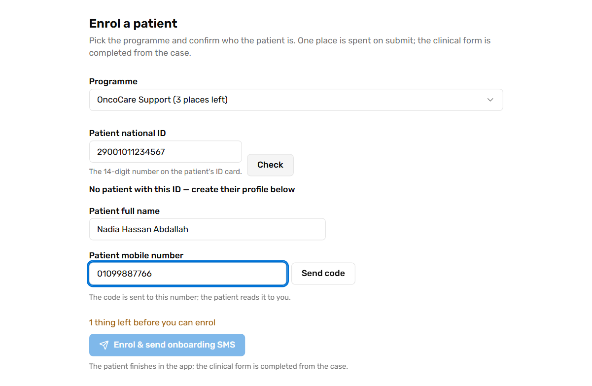
- 1Patient national ID — the 14 digits on the patient's ID card.
- 2Check looks the patient up.
- 3No patient with this ID — so you create a short profile.
- 4Patient full name — as on the ID card.
- 5Patient mobile number — the patient's own mobile.
- 6Send code texts a confirmation code to that mobile.
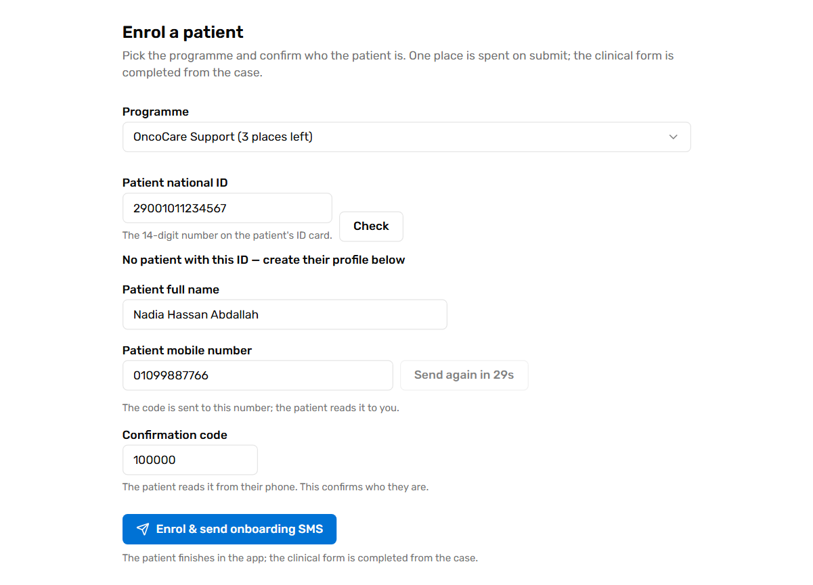
- 1The code is on its way (a message shows the number it went to). If it does not arrive, Send again when the countdown ends.
- 2Confirmation code — the patient reads it to you from their phone.
- 3Enrol & send onboarding SMS enrols the patient and texts them how to continue in the app.
- 4The patient finishes in the app; the clinical form is completed from the case.
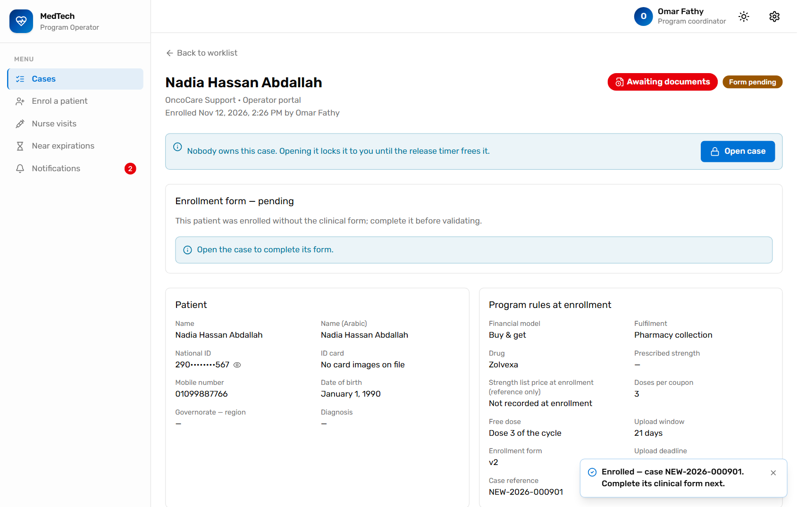
- 1Enrolled — case … The new case opens.
- 2Its source is Operator portal, with the date and who enrolled the patient.
- 3Form pending.
- 4Open the case and complete its form, as described above.
If the patient is already known to MedTech:
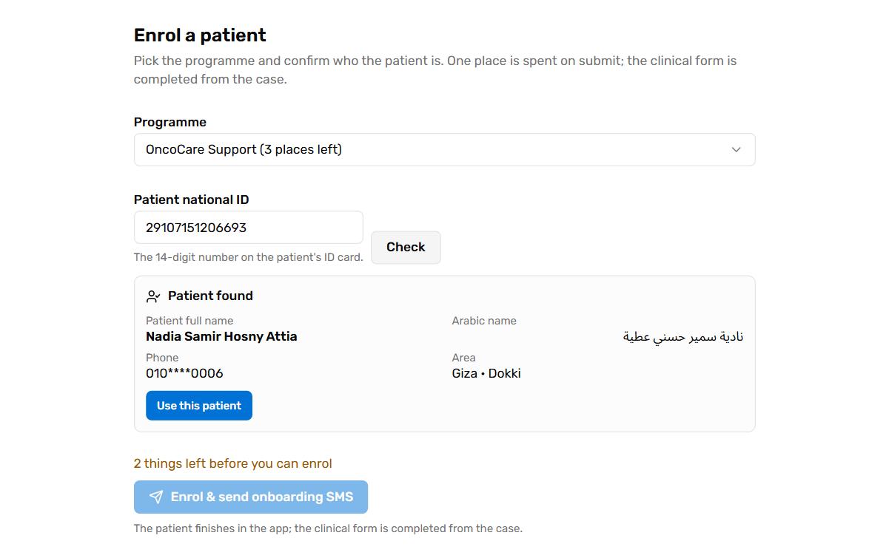
- 1Patient found.
- 2The patient's name, Arabic name and area, and their phone number partly hidden — compare them with the ID card.
- 3Use this patient, then Send code: the code goes to the mobile number on file. Continue as above.
Near expirations
A daily list of patients to call about boxes they received whose expiry date is near. It is not a pharmacy stock list.
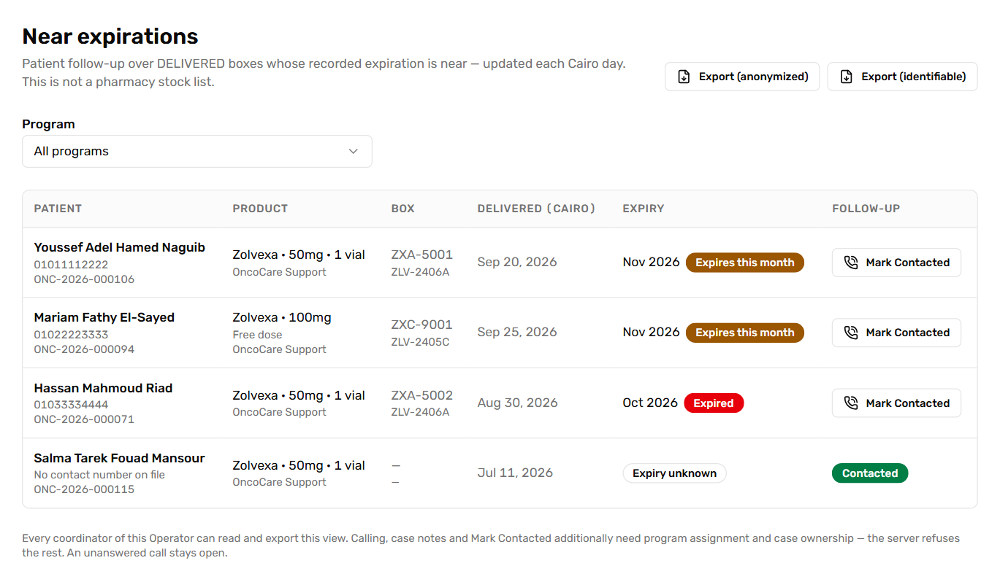
- 1Program — show one programme or all of them.
- 2Export (anonymized) downloads the list without patient names…
- 3…and Export (identifiable) with them.
- 4The patient's name, phone and case reference. Click the name to open the case, and note what the patient told you in the case history.
- 5Expires this month, Expired or Expiry unknown. A Free dose is followed up too.
- 6Mark Contacted once you have reached the patient.
- 7Contacted — this follow-up is done.
An unanswered call stays open: leave the row as it is. Every coordinator of your office can read and export the list; calling, notes and Mark Contacted also need the programme assignment and the case lock.
Nurse visits
For home-nurse programmes, the visits of your cases.
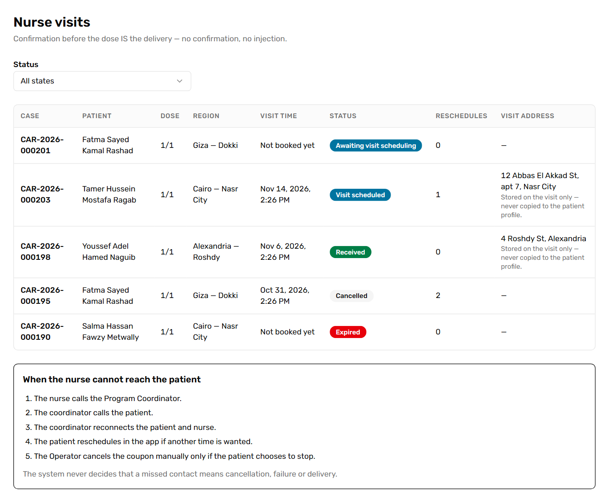
- 1Status — show the visits in one state, or All states.
- 2Each visit's status, for example Visit scheduled.
- 3The visit address is stored on the visit only, never copied to the patient profile.
- 4When the nurse cannot reach the patient — the steps to follow.
- 5The system never treats a missed contact as a cancellation, a failure or a delivery.
This page is for reading only: the patient confirms the visit in the app.
Notifications
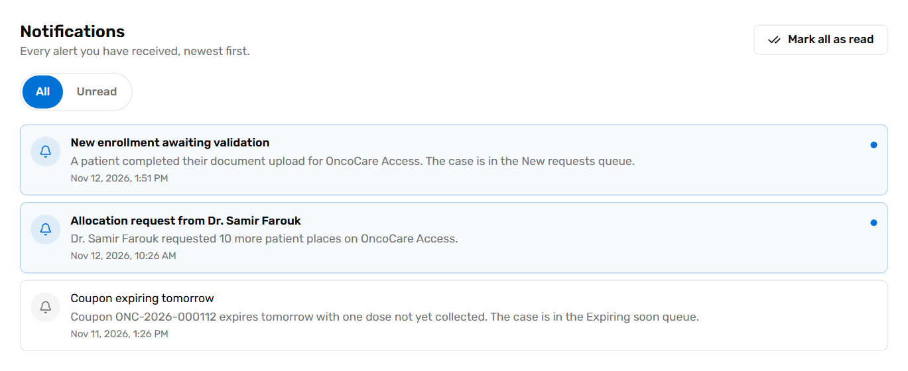
- 1Mark all as read clears the unread dots.
- 2Show All, or only the Unread ones.
- 3Each notification says what happened and when. A dot marks an unread one; click it to mark it as read.
You are told, for example, when a new case arrives for validation, when a doctor asks for more places and when a coupon expires tomorrow.
Quick answers
I opened a case by mistake. Click Release case. It goes straight back to the queue for the next coordinator.
My timer ran out while I was typing. The decision can no longer be sent. Copy any text you need, open the case again and start the decision again.
Can I undo a rejection? No. Rejection is final; the patient needs a new enrolment.
The patient's documents are not readable. Use Request correction and say in the note exactly what to upload again.
No pharmacy has the medicine. On a programme with advanced pharmacy search, use Mark as unfulfilled with a note; the patient and the doctor are told the medicine is delayed.
A pharmacy says the patient left without confirming. Open the case and use Release code on that dose, with the reason.
Who sees what I did? Every decision, note and release is recorded in the case history under your name, with its time.